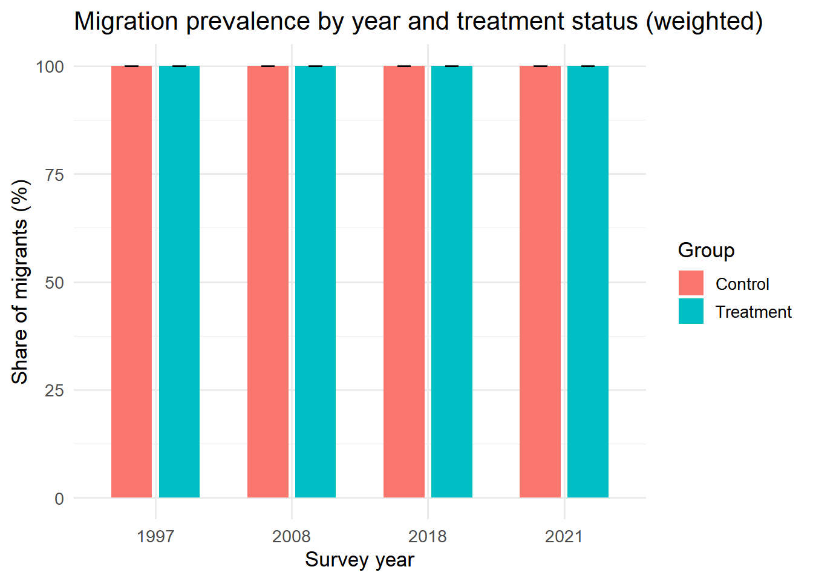
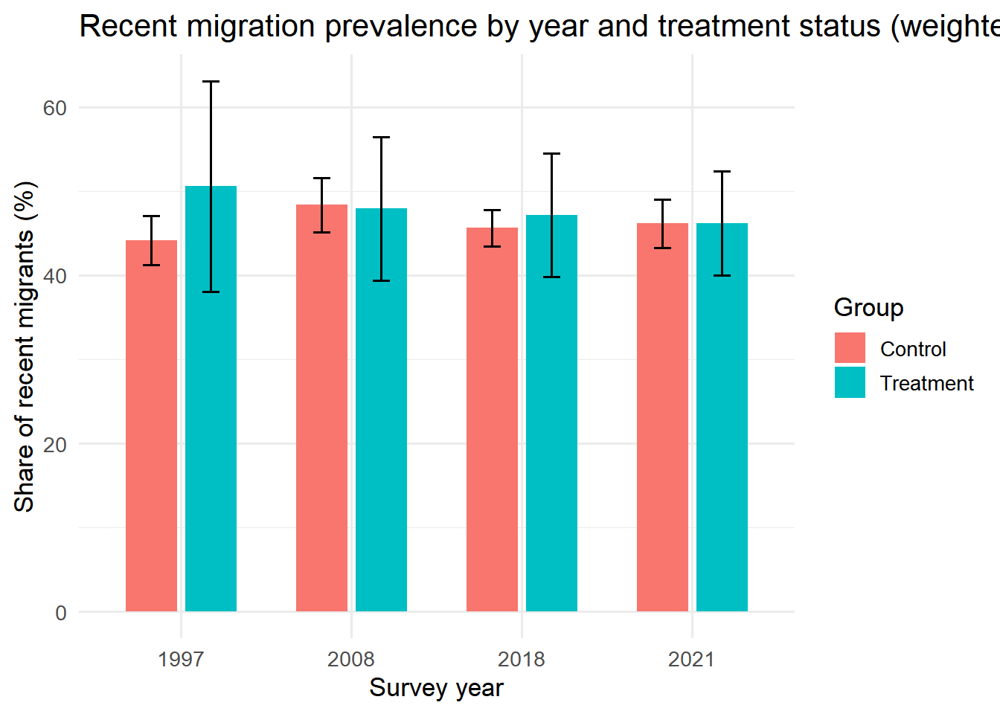
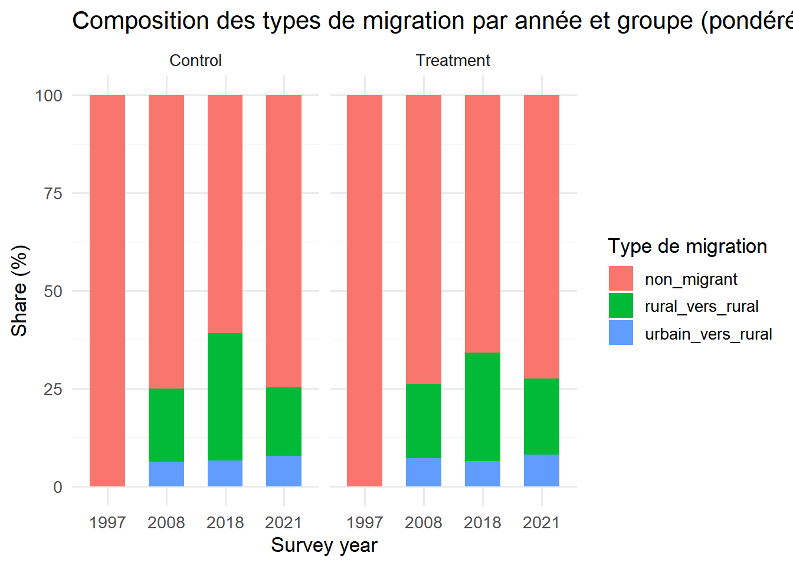
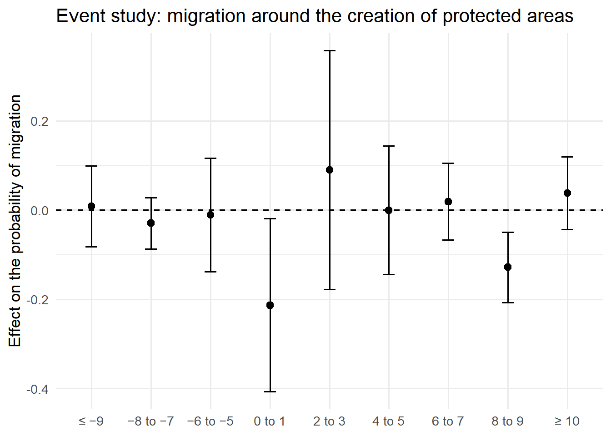

In the pre-analysis plan, we chose not to include migration among the control variables, as it is likely influenced both by the direct effects of protected areas and by broader changes in living standards in surrounding areas, making it a collider rather than a valid control. Instead, migration is treated as an outcome variable, since it is more plausibly a consequence of protected areas than an independent cause. This allows us to assess whether populations leave their territory because of protected areas, or whether migration is one of the mechanisms through which these areas affect living standard, without introducing bias into the analysis. In their paper, Jones et al. [-@Jones2018] state that human migration is often considered an important driver of land use change and a threat to protected area integrity. Understanding household mobility and behaviour at the forest frontier is important for guiding conservation and development policies.
Variable definition
Among the three available data sources (DHS, MIS, MICS), the indicators that may help explain the movements of household members are as follows:
Indicator
Source
Level
Indicator definition
V104
DHS/MIS (women)
Individual
Number of years the respondent has lived in the village, town, or city where she was interviewed. Visitors to the community are coded 96
V135 / MV135
DHS/MIS
Individual
Whether the respondent is a usual resident or just a visitor to the household
V136 / MV136
DHS/MIS
Household
Total number of household members (residents + visitors who slept there)
MV104
DHS/MIS (men)
Individual
Number of years the respondent has lived in the village, town, or city where he was interviewed. Visitors to the community are coded 96
WB15
MICS (women)
Individual
MICS equivalent of V104
MWB15
MICS (men)
Individual
MICS equivalent of V104
HV102
DHS/MIS
Household
De jure resident status (usual resident)
HV103
DHS/MIS
Household
De facto resident status (slept there the previous night)
Migration is not direcly observed in the DHS, MIS, and MICS data. Instead, it is derived from respondents’ reported duration of continuous residence in their current place of residence (V104/MV104 in DHS and WB15/MWB15 in MICS). Unlike the DHS and MICS, the 2011, 2013, and 2016 MIS surveys do not include the migration/length of residence module. Although the corresponding variable (v104) is present in the files, it was not filled in (the column contains only “NA” entries). These three waves are therefore excluded from the migration analysis, which is based on a panel limited to 4 waves (1997, 2008, 2018, 2021), compared to 7 waves that do not depend on this variable.
Based on this information, we construct an indicator for migration (migrant) and an indicator for recent migration (migrant_recent), defined as having arrived in the current place of residence within the previous five years.
This measure captures whether an individual has migrated to their current place of residence rather than an annual migration flow. Consequently, the DID estimates interpreted as changes in the probability of having migrated to the current place of residence, rather than changes in an annual migration rate.
Data availability summary
We use the following indicators
Year
Source
V104
MV104
WB15
MWB15
1997
DHS-III
✓
✗
✗
✗
2008
DHS-V
✓
✓
✗
✗
2011
MIS
✗
✗
✗
✗
2013
MIS
✗
✗
✗
✗
2016
MIS
✗
✗
✗
✗
2018
MICS-6
✗
✗
✓
✓
2021
DHS-VIII
✓
✓
✗
✗
The migration outcome is constructed from individual-level questions on duration of residence. Female respondents are available consistently across survey waves, whereas male respondents are not. Therefore, the main analysis uses female respondents to ensure comparability across years.
Warning: le package 'dplyr' a été compilé avec la version R 4.5.3
── Attaching core tidyverse packages ──────────────────────── tidyverse 2.0.0 ──
✔ dplyr 1.2.1 ✔ readr 2.1.5
✔ forcats 1.0.1 ✔ stringr 1.5.2
✔ ggplot2 4.0.0 ✔ tibble 3.3.0
✔ lubridate 1.9.4 ✔ tidyr 1.3.1
✔ purrr 1.1.0
── Conflicts ────────────────────────────────────────── tidyverse_conflicts() ──
✖ dplyr::filter() masks stats::filter()
✖ dplyr::lag() masks stats::lag()
ℹ Use the conflicted package (<http://conflicted.r-lib.org/>) to force all conflicts to become errors
library(haven)library(purrr)library(fixest)
Warning: le package 'fixest' a été compilé avec la version R 4.5.2
library(survey)
Warning: le package 'survey' a été compilé avec la version R 4.5.2
Le chargement a nécessité le package : grid
Le chargement a nécessité le package : Matrix
Attachement du package : 'Matrix'
Les objets suivants sont masqués depuis 'package:tidyr':
expand, pack, unpack
Le chargement a nécessité le package : survival
Attachement du package : 'survey'
L'objet suivant est masqué depuis 'package:graphics':
dotchart
library(did2s)
Warning: le package 'did2s' a été compilé avec la version R 4.5.2
did2s (v1.2.0). For more information on the methodology, visit <https://www.kylebutts.github.io/did2s>
To cite did2s in publications use:
Butts & Gardner, "The R Journal: did2s: Two-Stage
Difference-in-Differences", The R Journal, 2022
Une entrée BibTeX pour les utilisateurs LaTeX est
@Manual{,
title = {did2s: Two-Stage Difference-in-Differences Following Gardner (2021)},
author = {Kyle Butts and John Gardner},
year = {2021},
url = {https://journal.r-project.org/articles/RJ-2022-048/},
}
Linking to GEOS 3.13.1, GDAL 3.11.0, PROJ 9.6.0; sf_use_s2() is TRUE
# Date de référence des vagues (même définition que 01-treatment-assignation :# 1er juin, un seul point de définition)survey_reference_date <-function(year) {as.Date(sprintf("%d-06-01", year))}library(modelsummary)
Warning: le package 'modelsummary' a été compilé avec la version R 4.5.2
library(labelled)
Warning: le package 'labelled' a été compilé avec la version R 4.5.2
# A tibble: 1 × 1
prop_treatment_date_na
<dbl>
1 0.837
Load migration’s survey data
Définition du statut de résidence et de la migration
# Nettoyage de la durée de résidence -----------------------------------# DHS/MIS (v104/mv104, 1997/2008/2011/2013/2016/2021)# 95 = toujours vécu ici | 96 = visiteur | 97 = Inconsistent | 98 = Don't know | 99 = ne sait pas# MICS (wb15/mwb15, 2018)# 99 = Non reponse clean_duration <-function(x) { y <-as.numeric(zap_labels(x)) y <-ifelse(y %in%c(97, 98, 99), NA_real_, y) y}# Identification du statut de résidence derive_migrant <-function(duree){ statut_residence <-case_when( duree ==95~"toujours ici", duree ==96~"visiteur", duree >=0& duree <95~"duree_connue",TRUE~NA_character_ )# Indicateur de migration migrant <-case_when( duree ==95~0L, # non migrant duree ==96~NA_integer_, # visiteur duree >=0& duree <95~1L, # migrantTRUE~NA_integer_ )# Indicateur de migration récente (migration depuis 5 ans ou moins) migrant_recent <-case_when( duree ==96~NA_integer_, # Visiteur duree ==95~NA_integer_, # non-migrant duree >=0& duree <=5~1L, # migrant récent duree >5& duree <95~0L, # migrant ancienTRUE~NA_integer_ )tibble(statut_residence = statut_residence, migrant = migrant, migrant_recent = migrant_recent )}# Identification du type de migration derive_type_migration <-function( migrant, residence_precedente) {case_when( migrant ==1& residence_precedente =="urbain"~"urbain_vers_rural", migrant ==1& residence_precedente =="rural"~"rural_vers_rural", migrant ==1& residence_precedente =="etranger"~"etranger_vers_rural", migrant ==0~"non_migrant",TRUE~NA_character_ )}
Harmonization of the education variable (v106 vs WB6A/MWB6A)
The variables related to education in the three data sources are not categorized in the same way. In the DHS/MIS Data, variable v106 uses only 4 categories (0 = No education, 1 = Primary, 2 = Secondary, 3 = Higher), whereas in the MICS data, variable WB6A for women and MWB6A for men use more categories (0 = Preschool, 1 = Primary, 2 = Seconday 1, 3 = Secondary 2, 4 = Higher, 8 = Don’t know, 9 = No response). We will therefore harmonize these variables into 5 categories (None, Preschool, Primary, Secondary, Higher).
# Fonction education_labels <-c("Aucune", "Prescolaire", "Primaire", "Secondaire", "Supérieur")recode_education_dhs <-function(x) { x <-as.numeric(zap_labels(x))case_when( x ==0~0L, # Aucune x ==1~2L, # Primaire x ==2~3L, # Secondaire x ==3~4L, # SuperieurTRUE~NA_integer_ )}recode_education_mics <-function(x){ x <-as.numeric(zap_labels(x))case_when( x ==0~1L, # prescolaire x ==1~2L, # primaire x %in%c(2,3) ~3L, # secondaire 1 + 2 -> secondaire x ==4~4L, # superieur x %in%c(8,9) ~NA_integer_, # NSP / pas de reponseTRUE~NA_integer_ )}var_education <-function(code){factor(code, levels =0:4, labels = education_labels)}
Harmonization of place of residence (v105/mv105 vs WB16A/MWB16A)
The variables related to respondent’s place of residence in the three data sources are not categorized in the same way. In the DHS/MIS Data, variable v105/mv105 uses these categories (0 = capital, large city, 1 = Small city, 2 = Town, 3 = Countryside, 4 = Abroad), whereas in the MICS data, variable WB16A for women and MWB16A for men use more categories ( 1 = Large city, 2 = Other city, 3 = rural area, 9 = No response). We will therefore harmonize these variables into 5 categories (None, Preschool, Primary, Secondary, Higher).
Women Data
# DHS lieu_precedent_dhs <-function(v105){ x <-as.numeric(zap_labels(v105))case_when( x %in%c(0, 1, 2) ~"urbain", # Capital/large city, Small city, Town x ==3~"rural", # Countryside x ==4~"etranger", # AbroadTRUE~NA_character_ )}# MICSlieu_precedent_mics <-function(WB16A){ x <-as.numeric(zap_labels(WB16A))case_when( x %in%c(1, 2) ~"urbain", # Grande ville, Autre ville x ==3~"rural", # Milieu rural x ==9~NA_character_, # Non reponseTRUE~NA_character_ )}
DHS files (1997, 2008, 2021)
The sampling stratum variable is designated as “v022” for the year 1997, and “v023” for all other DHS/MIS waves (2008,2021). We rename the “sample stratum” variable to v023.
Women Data
# Helper DHS, Femmes-----------------------------# v001: cluster number# v002: household number # v005: sample weight# v012: respondent's age# v021: Primary sample unit# v023: Sample strate# v024: De facto region of residence # v025: De facto type of place of residence# v104: Number of years the respondent has lived# v105: Type of place of previous residence # v106: Highest education level attendedload_migration_ir <-function(path, year, strate_var_source,extra_vars =c("v012", "v106"),filter_rural =TRUE) { cols <-c("v001", "v002", "v005", "v021", strate_var_source,"v024", "v025", "v026", "v104", "v105", extra_vars ) df <-read_dta( path,col_select =all_of(unique(cols)) )if (strate_var_source !="v023") { df <- df |>rename(v023 =!!sym(strate_var_source)) }if (filter_rural) { df <- df |>filter(v025 ==2) } df <- df |>mutate(DHSYEAR =as.integer(year),sexe ="femme",duree_residence =clean_duration(v104),residence_precedente =case_when( v104 %in%c(95, 96) ~NA_character_,TRUE~lieu_precedent_dhs(v105) ),region_precedente =NA_real_,taille_localite =as.numeric(zap_labels(v026)),annee_arrivee =ifelse(!is.na(duree_residence) & duree_residence <95, DHSYEAR - duree_residence,NA_real_ ) ) df <-bind_cols( df,derive_migrant(df$duree_residence) ) df <- df |>mutate(type_migration =derive_type_migration( migrant, residence_precedente ),education =var_education(recode_education_dhs(v106) ) ) df |>select( v001, v002, v005, v021, v023, DHSYEAR, sexe, duree_residence, statut_residence, migrant, migrant_recent, residence_precedente, region_precedente, type_migration, annee_arrivee, education, taille_localite, v025, v024,all_of(extra_vars) )}ir_1997 <-load_migration_ir("data/raw/dhs/DHS_1997/MDIR31DT/MDIR31FL.DTA", 1997, "v023")ir_2008 <-load_migration_ir("data/raw/dhs/DHS_2008/MDIR51DT/MDIR51FL.DTA", 2008, "v023")#ir_2011 <- load_migration_ir("data/raw/dhs/DHS_2011/MDIR61DT/MDIR61FL.DTA", 2011, "v023")#ir_2013 <- load_migration_ir("data/raw/dhs/DHS_2013/MDIR6ADT/MDIR6AFL.DTA", 2013, "v023")#ir_2016 <- load_migration_ir("data/raw/dhs/DHS_2016/MDIR71DT/MDIR71FL.DTA", 2016, "v023")ir_2021 <-load_migration_ir("data/raw/dhs/DHS_2021/MDIR81DT/MDIR81FL.DTA", 2021, "v023")
Men Data
# Helper DHS, hommes ----------------------------------------------# mv012: respondent's age# mv106: Highest education level attended# mv024: De facto region of residence # mv025: De facto type of place of residence# mv001: cluster number# mv002: household number # mv005: sample weight# mv025: Primary sample unit# mv023: Sample strate# mv104: Number of years the respondent has lived# mv105: Type of place of previous residence load_migration_mr <-function(path, year, filtrer_rural =TRUE) { cols <-c("mv001", "mv002", "mv005", "mv021", "mv023","mv104", "mv105", "mv025", "mv026","mv012", "mv106", "mv024" ) df <-read_dta( path,col_select =all_of(cols) ) |>rename(v001 = mv001,v002 = mv002,v005 = mv005,v021 = mv021,v023 = mv023,v012 = mv012,v106 = mv106,v024 = mv024,v025 = mv025 )if (filtrer_rural) { df <- df |>filter(v025 ==2) } df <- df |>mutate(DHSYEAR =as.integer(year),sexe ="homme",duree_residence =clean_duration(mv104),residence_precedente =case_when( mv104 %in%c(95, 96) ~NA_character_,TRUE~lieu_precedent_dhs(mv105) ),region_precedente =NA_real_,taille_localite =as.numeric(zap_labels(mv026)),annee_arrivee =ifelse(!is.na(duree_residence) & duree_residence <95, DHSYEAR - duree_residence,NA_real_ ) ) df <-bind_cols( df,derive_migrant(df$duree_residence) ) df <- df |>mutate(type_migration =derive_type_migration( migrant, residence_precedente ),education =var_education(recode_education_dhs(v106) ) ) df |>select( v001, v002, v005, v021, v023, DHSYEAR, sexe, duree_residence, statut_residence, migrant, migrant_recent, residence_precedente, region_precedente, type_migration, annee_arrivee, education, taille_localite, v025, v012, v106, v024 )}#Homme#mr_1997 <- load_migration_mr("data/raw/dhs/DHS_1997/MDPR31DT/MDPR31FL.DTA", 1997, "DHS-III")mr_2008 <-load_migration_mr("data/raw/dhs/DHS_2008/MDMR51DT/MDMR51FL.DTA", 2008)#mr_2011 <- load_migration_mr("data/raw/dhs/DHS_2011/MDIR61DT/MDIR61FL.DTA", 2011, "MIS")#mr_2013 <- load_migration_mr("data/raw/dhs/DHS_2013/MDMR6ADT/MDMR6AFL.DTA", 2013, "MIS")#mr_2016 <- load_migration_mr("data/raw/dhs/DHS_2016/MDMR71DT/MDMR71FL.DTA", 2016, "MIS")mr_2021 <-load_migration_mr("data/raw/dhs/DHS_2021/MDMR81DT/MDMR81FL.DTA", 2021)
MICS Data (2018)
Women data
# Femme--------------------------------------------------# HH1: cluster number# HH2: household number # HH6: De facto type of place of residence# HH7: De facto region of residence # WB4: respondent's age# WB6A: Highest education level attended# WB15: Number of years the respondent has lived# WB16A: Type of place of previous residence # wmweight: sample weight# PSU: Primary sample unit# stratum: Sample strate# MICS - Femmes -----------------------------------------------------------load_migration_mics_femme <-function(path, year =2018,filter_rural =TRUE) { df <-read_sav( path,col_select =c("HH1", "HH2", "HH6", "HH7", "stratum", "wmweight","WB4", "WB6A", "WB15", "WB16A", "WB17" ) )if (filter_rural) { df <- df |>filter(HH6 ==2) } df <- df |>mutate(DHSYEAR =as.integer(year),sexe ="femme",duree_residence =clean_duration(WB15),residence_precedente =case_when( WB15 %in%c(95, 96) ~NA_character_,TRUE~lieu_precedent_mics(WB16A) ),region_precedente =as.numeric(zap_labels(WB17)),taille_localite =NA_real_,annee_arrivee =ifelse(!is.na(duree_residence) & duree_residence <95, DHSYEAR - duree_residence,NA_real_ ) ) df <-bind_cols( df,derive_migrant(df$duree_residence) ) df <- df |>mutate(type_migration =derive_type_migration( migrant, residence_precedente ),education =var_education(recode_education_mics(WB6A) ) ) df |>transmute(v001 = HH1,v002 =as.numeric(HH2),v005 = wmweight,v021 = HH1,v023 =as.numeric(zap_labels(stratum)), DHSYEAR, sexe, duree_residence, statut_residence, migrant, migrant_recent, residence_precedente, region_precedente, type_migration, annee_arrivee, education, taille_localite,v025 = HH6,v012 = WB4,v024 = HH7 )}wm_2018 <-load_migration_mics_femme("data/raw/mics/2018/SPSS datasets/wm.sav")
# A tibble: 5 × 4
statut_residence migrant migrant_recent n
<chr> <int> <int> <int>
1 duree_connue 1 0 6993
2 duree_connue 1 1 6061
3 toujours ici 0 NA 30950
4 visiteur NA NA 248
5 <NA> NA NA 72
After the data merge, we observe that the 2018 MICS data show a significantly lower rate of association wit protected areas than the other three waves (2.2% of clusters, compared with 15-25% for 1997, 2008, and 2021), reducing the usable estimation sample for this wave to approximately 370 observations.
Descriptive statistics
Descriptive Statistics of Migration in DHS Data
# Nombre d'observation par année et par sexe dat_migrant %>%count(DHSYEAR, sexe) %>%group_by(DHSYEAR) %>%mutate(pct =100* n /sum(n) ) %>%ungroup()
# A tibble: 7 × 4
DHSYEAR sexe n pct
<int> <chr> <int> <dbl>
1 1997 femme 2944 100
2 2008 femme 6999 66.4
3 2008 homme 3539 33.6
4 2018 femme 6727 68.4
5 2018 homme 3105 31.6
6 2021 femme 6600 66.6
7 2021 homme 3305 33.4
All respondents in the 1997 survey were women, as noted at the beginning of the analysis. Starting in 2008, the composition was much more balanced, but still predominantly female (about two-thirs women and one-third men).
# Nombre de migrant par année et par sexe dat_migrant %>%group_by(DHSYEAR, sexe) %>%summarise(n =n(),migrant_n =sum(migrant ==1, na.rm =TRUE),migrant_pct =mean(migrant ==1, na.rm =TRUE) *100 ) %>%ungroup()
`summarise()` has regrouped the output.
ℹ Summaries were computed grouped by DHSYEAR and sexe.
ℹ Output is grouped by DHSYEAR.
ℹ Use `summarise(.groups = "drop_last")` to silence this message.
ℹ Use `summarise(.by = c(DHSYEAR, sexe))` for per-operation grouping
(`?dplyr::dplyr_by`) instead.
The data show a significant increase in the number of respondents over time. The ratio of women to men aged 15 to 49 is relatively stable (~ 26 to 49% women, 16 to 20% men), except in 1997, when only women were surveyed.
# Nombre de migration récente par année dat_migrant %>%count(migrant_recent) %>%mutate(pct =100* n /sum(n) )
# A tibble: 3 × 3
migrant_recent n pct
<int> <int> <dbl>
1 0 5654 17.0
2 1 4762 14.3
3 NA 22803 68.6
Between 2008 et 2021, approximately 50% of migrants associated with protected areas were recent migrants (49.9% in 2008, 49.6% in 2021), with a slight decline in 2018 (43.1%). This stability in the rate of recent migration indicates a steady and continuous migratory flow in areas near protected areas, where the migrant population is renewed at a constant rate: each year, approximately half of the migrants are recent arrivals. It should be noted that this analysis focuses solely on identified migrants (2,669 individuals, or 26.2% of the matched sample), with the remaining observations corresponding to non-migrants. These results reflect active and predictable mobility in the study areas.
# Vérification du statut_residence par année dat_migrant %>%count(statut_residence) %>%mutate(pct =100* n /sum(n) )
# A tibble: 2 × 3
statut_residence n pct
<chr> <int> <dbl>
1 duree_connue 10416 31.4
2 toujours ici 22803 68.6
dat_migrant %>%count(DHSYEAR, statut_residence) %>%group_by(DHSYEAR) %>%mutate(pct =100* n /sum(n) ) %>%ungroup()
# A tibble: 8 × 4
DHSYEAR statut_residence n pct
<int> <chr> <int> <dbl>
1 1997 duree_connue 1415 48.1
2 1997 toujours ici 1529 51.9
3 2008 duree_connue 2673 25.4
4 2008 toujours ici 7865 74.6
5 2018 duree_connue 3779 38.4
6 2018 toujours ici 6053 61.6
7 2021 duree_connue 2549 25.7
8 2021 toujours ici 7356 74.3
The majority of migrants linked to protected areas are permanent residents (“always here”): 76.2% in 2008, 75.8% in 2021, and 63.4% in 2018. Conversely, only 23.8% to 36.6% of migrants have a known and measurable length of residence, meaning they migrated at a specific time. This predominance of permanent residents (about 3 out of 4) indicates that most of the migrants surveyed do not remember or do not have precise information about their year of arrival. The exception in 2018, when 36.6% had a known duration of residence, may reflect a different sample or improved data collection. These results suggest that only a minority of migrants can provide precise information on their duration of residence, limiting the temporal analysis of migration.
# Vérification de la durée de résidence par année dat_migrant %>%filter(statut_residence =="duree_connue") %>%group_by(DHSYEAR) %>%summarise(n =n(),moyenne =mean(duree_residence, na.rm =TRUE),mediane =median(duree_residence, na.rm =TRUE),ecart_type =sd(duree_residence, na.rm =TRUE),minimum =min(duree_residence, na.rm =TRUE),maximum =max(duree_residence, na.rm =TRUE) ) %>%ungroup()
Migrants matched to protected areas have lived at their current place of residence for an average of 8 to 9 years (8.04 years in 2008, 9.14 years in 2018, 8.69 years in 2021), with a median of around 6 - 7 years. This stability in the average duration indicates that the migrant population does not change drastically between survey years. The high standard deviations (7-8 years) reveal significant variability: some migrants have just arrived (minimum = 0 years), while others have been settled for a long time (maximum = 40-51 years).
# Vérification de l'année d'arrivée sur le lieu de résidence par année d'enquête dat_migrant %>%filter(!is.na(annee_arrivee)) %>%group_by(DHSYEAR) %>%summarise(moyenne =mean(annee_arrivee),mediane =median(annee_arrivee),minimum =min(annee_arrivee),maximum =max(annee_arrivee) ) %>%ungroup()
Among migrants with a known length of residence, the median year of arrival naturally increases over time: 2002 in 2008, 2011 in 2018, and 2015 in 2021. This simply reflects the fact that migrants interviewed in more recent surveys arrived later. On average, migrants surveyed in 2008 arrived around 2000, those surveyed in 2018 around 2009, and those surveyed in 2021 around 2012. The majority of arrivals occured between 200 and 2015, with a few very long-term migrants dating back to 1968-1983. These results confirm thata reas near protected areas experienced significant migration beginning in the 2000s, with a continuous influx through 2021.
# Type de migration par année dat_migrant %>%count(type_migration) %>%mutate(pct =100* n /sum(n) )
Migration in areas near protected areas is dominated by rural-to-rural migration: 17.5% in 2008, 31.6% in 2018, and 16.9% in 2021. Urban-to-rural migration is a minority but still present: 5.89% in 2008, 5.08% in 2018, and 7.25% in 2021. These results indicate that the majority of migrants come from other rural areas (17-32%), while a small proportion come from urban areas (5-7%). The year 2018 stands out with a higher share of rural-to-rural migration (31.6%) and a lower proportion of non-migrants (63.4%), suggesting a different survey profile. Overall, these data show that protected areas primarily attract migrants from other rural areas, confirming intra-regional rural mobility rather than an urban exodus.
# Ajouter un test tt.test(v012 ~ migrant, data = dat_migrant)
Welch Two Sample t-test
data: v012 by migrant
t = -14.939, df = 21354, p-value < 0.00000000000000022
alternative hypothesis: true difference in means between group 0 and group 1 is not equal to 0
95 percent confidence interval:
-2.018287 -1.550090
sample estimates:
mean in group 0 mean in group 1
28.45419 30.23838
t.test(as.numeric(education) ~ migrant, data = dat_migrant)
Welch Two Sample t-test
data: as.numeric(education) by migrant
t = -17.149, df = 19438, p-value < 0.00000000000000022
alternative hypothesis: true difference in means between group 0 and group 1 is not equal to 0
95 percent confidence interval:
-0.2296859 -0.1825658
sample estimates:
mean in group 0 mean in group 1
2.807035 3.013161
Migrants and non-migrants share very similar characteristics. The average age of migrants (30.1 years) is slightly higher than that of non-migrants (29.0 years), with medians of 29 and 27 years, respectively. The educational level of migrants (2.88) is also slightly higher than that of non-migrants (2.58), suggesting that migrants, on average, possess slightly higher educational capital. However, these differences remain modest, indicating that migration to areas near protected areas does not select a very distinct population: migrants and non-migrants share comparable demographic and educational profiles.
# Statistiques pondérées (design-based) par année et par groupe des migrants récentsmigrant_desc_svy <-svyby(~migrant + migrant_recent,~DHSYEAR + GROUP, design_migration, svymean,na.rm =TRUE,vartype ="ci") |>as_tibble() |>arrange(DHSYEAR, GROUP)migrant_desc_svy
# A tibble: 8 × 3
DHSYEAR GROUP n
<int> <chr> <int>
1 1997 Control 2659
2 1997 Treatment 285
3 2008 Control 8932
4 2008 Treatment 1606
5 2021 Control 7874
6 2021 Treatment 2031
7 2018 Control 8418
8 2018 Treatment 1414
Recent migration rates are similar between the Control and Treatment groups: approximately 50% in 2008 (52.8% for Control vs 48.6% for Treatment), 40% in 2018 (40.4% for Control and 40.1% for Treatment), and 50% in 2021 (52.3% for Control vs 49.2% for Treatment). This similarity in rates between the groups suggests no visible difference in the impact of protected areas on recent migration, at least at this stage of the analysis.
# Type de migration par année et groupe (pondéré)type_dat_migrant_svy <-svytable(~DHSYEAR + GROUP + type_migration, design_migration) |>as_tibble() |>mutate(pct = n /sum(n) *100, .by =c(DHSYEAR, GROUP))type_dat_migrant_svy
# A tibble: 24 × 5
DHSYEAR GROUP type_migration n pct
<chr> <chr> <chr> <dbl> <dbl>
1 1997 Control non_migrant 1398 100
2 2008 Control non_migrant 6682 75.0
3 2018 Control non_migrant 5122 60.9
4 2021 Control non_migrant 5885 74.7
5 1997 Treatment non_migrant 131 100
6 2008 Treatment non_migrant 1183 73.9
7 2018 Treatment non_migrant 931 65.8
8 2021 Treatment non_migrant 1471 72.4
9 1997 Control rural_vers_rural 0 0
10 2008 Control rural_vers_rural 1664 18.7
# ℹ 14 more rows
dat_migrant |>group_by(DHSYEAR, sexe) |>summarise(pct_na_type_migration =mean(is.na(type_migration)), n =n())
`summarise()` has regrouped the output.
ℹ Summaries were computed grouped by DHSYEAR and sexe.
ℹ Output is grouped by DHSYEAR.
ℹ Use `summarise(.groups = "drop_last")` to silence this message.
ℹ Use `summarise(.by = c(DHSYEAR, sexe))` for per-operation grouping
(`?dplyr::dplyr_by`) instead.
Rural-to-rural migration predominates, but with a notable variation in 2018: it accounts for 53.3% in the Control Group versus 72.9% in the treatment group. In 2008 and 2021, the differences are minimal (17-18% for rural-to-rural, 5-8% for urban-to-rural). The year 2018 stands out with a very different profile: 53.29% of non-migrants in the Control group versus 72.9% in the Treatment group, suggesting a different survey profile.
ggplot(migrant_desc_svy, aes(x =factor(DHSYEAR), y = migrant *100, fill = GROUP)) +geom_col(position =position_dodge(width =0.7), width =0.6) +geom_errorbar(aes(ymin = ci_l.migrant *100, ymax = ci_u.migrant *100),position =position_dodge(width =0.7), width =0.2 ) +labs(x ="Survey year", y ="Share of migrants (%)", fill ="Group",title ="Migration prevalence by year and treatment status (weighted)") +theme_minimal(base_size =13)

Figure 1: Share of migrants by survey year and treatment group (weighted)
dat_migrant_svy |>mutate(education =fct_recode(education,"No education"="Aucune","Pre-primary"="Prescolaire","Primary"="primary","Secondary"="secondary","Higher"="higher" ) ) |>rename("Age"= v012,"Education"= education,"Sex"= hv219,"Household head age"= hv220,"Duration of residence"= duree_residence,"Locality size"= taille_localite ) |>select(GROUP, "Age", "Education", "Sex", "Household head age", "Duration of residence", "Locality size") |>datasummary_balance(~GROUP, data = _, output ="gt")
Warning: There was 1 warning in `mutate()`.
ℹ In argument: `education = fct_recode(...)`.
Caused by warning:
! Unknown levels in `f`: primary, secondary, higher
Warning: Please install the `estimatr` package or set `dinm=FALSE` to suppress
this warning.
Table 1: Balance of covariates between treatment and control groups
Control (N=27883)
Treatment (N=5336)
Mean
Std. Dev.
Mean
Std. Dev.
Age
29.0
10.4
29.0
10.4
Sex
1.2
0.4
1.2
0.4
Household head age
40.9
13.3
40.5
13.1
Duration of residence
67.8
40.3
68.7
40.0
Locality size
3.0
0.0
3.0
0.0
N
Pct.
N
Pct.
Education
No education
4833
17.3
1033
19.4
Pre-primary
12
0.0
0
0.0
Primaire
14675
52.6
2659
49.8
Secondaire
6187
22.2
1213
22.7
Supérieur
153
0.5
27
0.5
The following balance table compares the sociodemographic characteristics between the treatment and control groups. In the control group, respondents are, on average, women aged 29, with a household head aged 40. Approximately 50.4% have a primary school education. The average length of residence in the area is 73 years. In the treatment group, respondents are, on average, mean aged 29, with a household head also aged 40. The educational distribution is similar to that of the control group. As for the population’s length of residence, it averages 71.1%.
ggplot(migrant_desc_svy, aes(x =factor(DHSYEAR), y = migrant_recent *100, fill = GROUP)) +geom_col(position =position_dodge(width =0.7), width =0.6) +geom_errorbar(aes(ymin = ci_l.migrant_recent *100, ymax = ci_u.migrant_recent *100),position =position_dodge(width =0.7), width =0.2 ) +labs(x ="Survey year",y ="Share of recent migrants (%)",fill ="Group",title ="Recent migration prevalence by year and treatment status (weighted)") +theme_minimal(base_size =13)

Figure 2: Share of recent migrants by survey year and treatment group (weighted)
ggplot(type_dat_migrant_svy, aes(x =factor(DHSYEAR), y = pct, fill = type_migration)) +geom_col(position ="stack", width =0.6) +facet_wrap(~GROUP) +labs(x ="Survey year",y ="Share (%)",fill ="Type de migration",title ="Composition des types de migration par année et groupe (pondéré)") +theme_minimal(base_size =13)

Figure 3: Distribution of migration types by survey year and treatment group (weighted)
Migration analysis
2×2 DiD
We follow the same 2×2 DiD design as the main analysis: a placebo test (1997–2008) and the treatment estimation (2008–2021). The model is:
where \(i\) indexes individuals (women or men depending on the specification), \(c\) clusters (PSU), \(t\) survey rounds. \(Migrant_{ict}\) is a binary variable (moved to current place of residence vs. has always lived there). Controls \(\mathbf{X}\) include SPEI values, household head sex and age, education level and the individual’s gender. Standard errors are clustered at the cluster-year level and all estimates are weighted by the combined survey weights \(w_{ict}\).
The results show that there is no statistically significant effect of the treatment on the probability of migration. The next figure presents the results of the 2x2 DID estimation comparing the treatment groups (households living within 10 km of protected area) and the control groups (household located more than 10 Km away) before (1997-2008) and after (2008-2021) the creation of the protected areas. The placebo test for the pre-intervention period (1997-2008) yields a small ans statistically insignificant coefficient (-0.0265), indicating that no differential trend was detected prior to the intervention. This confirms the parallel trends hypothesis. In contrast, for the intervention period (2008-2021), the estimated effect is positive but statistically insignificant (+5.23). Beyond the treatment effect, several factors are strongly associated with migration: women living in male-headed households are 14% less likely to migrate, while higher education increases the probability of migration by nearly 50%. Water stress in the previous year significantly increases the probability of migration. Although our models explain only 5 to 11% of the variation in female migration, these results highlight the importance of structural determinants (education, household composition), and environmental factors (climatic conditions) in migration decisions, independent of the intervention under study.
Our DID analysis specifically for women reveals that there is no statistically significant effect of treatment on the probability of migration. The placebo test for the period 1997-2008 yields a small, non significant coefficient (60.0285) and an estimated positive effect for the period 2008-2021 (+0.0759). The results also show that higher education remains the major determinant, increasing the probability of migration by 75% in the placebo group and 50% in the treatment group, while water stress in the previous year and household structure (male-headed households) significantly reduce the probability of migration. However, when the analysis is restricted to women, the statistical power is also reduced.
We use the Gardner (2022) two-stage DiD estimator (did2s) to leverage all available years with migration data (1997, 2008, 2018, 2021). This estimator is robust to heterogeneous treatment effects and staggered adoption.
# Préparation du design échelonné final : activation par date exacte,# cohortes g_eff, temps d'événement par dates et binnes historiques de deux ans# (même schéma que l'analyse principale).dat_migrant_did2s <- dat_migrant |>mutate(treatment_date =as.Date(treatment_date),treat_on =as.integer(treat ==1&survey_reference_date(DHSYEAR) >= treatment_date),# Cohorte de traitement g_eff (année calendaire d'entrée en traitement,# décalée d'un an si l'AP entre en vigueur après le 1er juin) ; contrôles# dans une cohorte "never" persistante. (NA de treatment_date neutralisés# sur une année fictive.)g_eff = { ty <-as.integer(format(treatment_date, "%Y")) ty[is.na(ty)] <-2000Lif_else(treat ==1, ty +as.integer(treatment_date >survey_reference_date(ty)),NA_integer_) },treatment_cohort =factor(if_else(treat ==1, as.character(g_eff), "never")),rel_year =if_else(treat ==1, as.numeric(DHSYEAR - g_eff), Inf),rel_year_clipped =case_when(is.infinite(rel_year) ~NA_real_,TRUE~pmax(pmin(rel_year, 10), -10) ),rel_year_2yr =case_when(is.na(rel_year_clipped) ~NA_integer_, rel_year_clipped <=-9~-5L, rel_year_clipped <=-7~-4L, rel_year_clipped <=-5~-3L, rel_year_clipped <=-3~-2L, rel_year_clipped <=-1~-1L, rel_year_clipped <=1~0L, rel_year_clipped <=3~1L, rel_year_clipped <=5~2L, rel_year_clipped <=7~3L, rel_year_clipped <=9~4L,TRUE~5L ),rel_year_2yr2 =case_when(is.na(rel_year_2yr) ~"never",TRUE~as.character(rel_year_2yr) ),rel_year_2yr2 =factor( rel_year_2yr2,levels =c("-5", "-4", "-3", "-2", "-1", "0", "1", "2", "3", "4", "5", "never") ) )did2s_static_migration <-did2s(data = dat_migrant_did2s,yname ="migrant",first_stage =~ sexe + education + spei_wc_n_2 + spei_wc_n_1 + spei_wc_n + hv219 + hv220 | treatment_cohort + DHSYEAR,second_stage =~i(treat_on, ref =FALSE),treatment ="treat_on",cluster_var ="cluster_uid",weights ="w_all")modelsummary(list("did2s migration (static, pooled men + women, 4 vagues)"= did2s_static_migration))
did2s migration (static, pooled men + women, 4 vagues)
treat_on = 1
-0.023
(0.033)
Num.Obs.
30791
R2
0.000
R2 Adj.
0.000
AIC
37816.9
BIC
37825.2
RMSE
0.45
Std.Errors
Corrected Clustered (cluster_uid)
The static DID estimation suggests a positive, but statistically insignificant, association between treatment and the probability of migration (+3.5 percentage points, standard error of 2.2). Given the magnitude of the uncertainty, this estimates does not allow us to reject the null hypothesis of no effect, which justifies the use of a dynamic event study analysis.
Unlike the static DID analysis, the event study examines the dynamics of the treatment effect on migration (for men and women combined) around the entry into force of the protected areas, using the same two-year bins as the main analysis. The graph below illustrates the estimated effects by relative period.
bin_label <-function(k) { dplyr::case_when(is.na(k) ~NA_character_, k =="-5"~"≤ −9", k =="-4"~"−8 to −7", k =="-3"~"−6 to −5", k =="-2"~"−4 to −3", k =="-1"~"−2 to −1", k =="0"~"0 to 1", k =="1"~"2 to 3", k =="2"~"4 to 5", k =="3"~"6 to 7", k =="4"~"8 to 9", k =="5"~"≥ 10", k =="never"~"Never treated",TRUE~as.character(k) )}event_study_df <-tidy(did2s_migration_es, conf.int =TRUE) |>filter(grepl("^rel_year_2yr2::", term)) |>mutate(k =sub("^rel_year_2yr2::", "", term),k =factor(k, levels =c("-5", "-4", "-3", "-2", "0", "1", "2", "3", "4", "5")) ) |>arrange(k)ggplot(event_study_df, aes(k, estimate)) +geom_hline(yintercept =0, linetype ="dashed") +geom_point(size =2.5) +geom_errorbar(aes(ymin = conf.low, ymax = conf.high), width =0.2) +labs(x =NULL,y ="Effect on the probability of migration",title ="Event study: migration around the creation of protected areas") +scale_x_discrete(labels = bin_label) +theme_minimal(base_size =13)

Migration by PA type - 2×2 DiD
We test whether effects differ between strict PAs (IUCN I–IV) and multi-use PAs (IUCN V–VI), following the same approach as the main analysis (H3). Given that migration is only observable on 4 waves (2008, 2018, 2021, only 1997 is women-only), we use the pooled sample (men + women, with a sex as a covariate) as the main specification here, consistent with the main migration DID. The women-only panel (dat_migrant_femmes)/ (dat_migrant2_femmes) is reported alongside as a robustness check, not as the primary estimate.
# Classification stricte (IUCN I-IV) vs multi-usage (IUCN V-VI) : définition# partagée via utils/iucn_sets.R — harmonisée avec 01, 07, 07bis et 08# (l'ancienne définition locale classait IV en multi-usage)source("utils/iucn_sets.R")dat_migrant_iucn <- dat_migrant |>mutate(treat_strict =as.integer(GROUP =="Treatment"&is_strict(IUCN_CAT)),treat_multi =as.integer(GROUP =="Treatment"&is_multi(IUCN_CAT)) )# Formule communeformula_did <-~ treat + post + treat:post + education + spei_wc_n_2 + spei_wc_n_1 + spei_wc_n + hv219 + hv220# PLACEBO (1997-2008) # Strict placebopre_strict_migrant <- dat_migrant_iucn |>filter(DHSYEAR %in%c(1997, 2008), treat_strict ==1| GROUP =="Control") |>mutate(post =as.integer(DHSYEAR ==2008))iucn_strict_pre <-feols( migrant ~ treat_strict + post + treat_strict:post + education + spei_wc_n_2 + spei_wc_n_1 + spei_wc_n + hv219 + hv220,data = pre_strict_migrant, weights =~w_all, cluster =~cluster_uid)
NOTE: 1 observation removed because of NA values (RHS: 1).
Warning: The VCOV matrix is not positive semi-definite and was 'fixed' (see
?vcov).
No category of protected area has a significant effect on migration. The treatment x post interaction coefficients are close to zero. This can be interpreted to mean that protected areas neither reduce migration nor stimulate it (no positive or negative effect was detected). Instead, the major determinants of migration and household needs, rather than the presence or absence of protected areas.
# Définir le positionnement pour éviter la superpositionpd <-position_dodge(width =0.2)migrant_iucn_df <-bind_rows(did_row(iucn_strict_pre, 2008, "treat_strict:post") |>mutate(type ="Strict"),did_row(iucn_strict_main, 2021, "treat_strict:post") |>mutate(type ="Strict"),did_row(iucn_multi_pre, 2008, "treat_multi:post") |>mutate(type ="Multi-use"),did_row(iucn_multi_main, 2021, "treat_multi:post") |>mutate(type ="Multi-use")) |>mutate(period =factor(ifelse(year ==2008, "1997–2008", "2008–2021"),levels =c("1997–2008", "2008–2021")),lo = estimate -1.96* se,hi = estimate +1.96* se )ggplot(migrant_iucn_df, aes(x = period, y = estimate, colour = type)) +geom_hline(yintercept =0, linetype ="dashed") +geom_point(size =3, position = pd) +geom_errorbar(aes(ymin = lo, ymax = hi), width =0.2, position = pd) +labs(x =NULL, y ="DiD effect on Pr(migration)",colour ="PA type",title ="Migration: 2×2 DiD by PA type") +theme_minimal(base_size =13)
 {#fig-migrant-2x2 women width=672}
{#fig-migrant-2x2 women width=672}